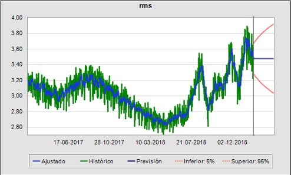

Para realizar la proyección fue necesario analizar los datos históricos para entender la información que nos entrega.
Los datos no presentan estacionalidad en periodos semejantes, solo una amplitud creciente hacia los datos recientes con una leve alza de vibración.
Dado esto último no se utilizó algun método estacional, arrojando que el método que mejor se ajusta al comportamiento es ARIMA (0, 1, 1) con una medida de error RMSE
(Raíz del error cuadrático medio) de 0.12, por lo que, la magnitud del error es muy baja y cercana a cero.
A continuación podremos ver el estudio realizado de los datos y la proyección graficada a partir la información.

Los datos históricos poseen un mínimo de 2.51 rms, una media de 3.04 rms, y un máximo de 3.9 rms. La desviación estándar de los datos históricos es de 0.26
El método ARIMA es seleccionado tiene un 0.7622 de U de Thell debido y -4.3 de BIC, siendo este último menor a otros modelos de predicción.
A continuación puede descargar el archivo con los datos proyectados con sus máximos, mínimos de los rangos de amplitud futuros.